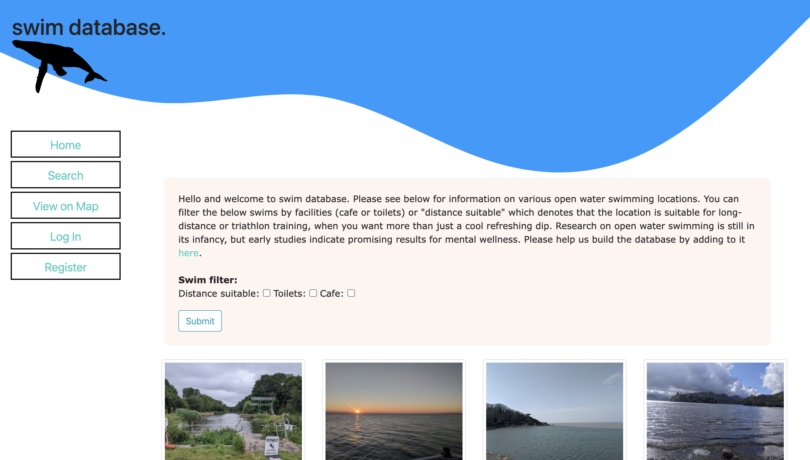
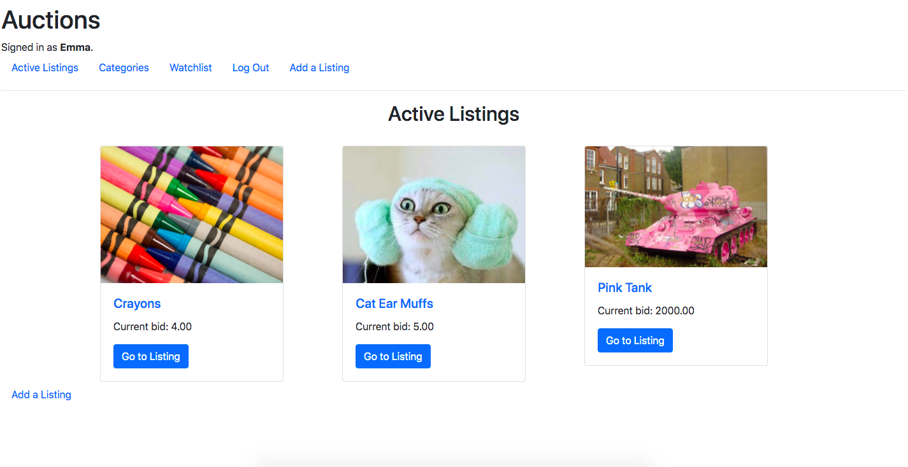

Projects
Below is an assortment of projects. Most of them are CS50 projects, as I have learned the majority of my coding skills from
CS50 - Introduction to Computer Science and
CS50w - Web Programming with Python and Javascript. I completed all of the CS50 projects for these courses apart from the final project for the latter, but have only included my favourites here. If, for whatever reason, you wish to see them, please
get in touch.
Swim Database

My most recent project and my own idea. A
swim database that stores snippets of info that pertain to open water swimming, mostly user added but it also makes calls to the UK government's environment agency API to update bathing quality. Github repository is
here.
Commerce
This is an Auction website a bit like eBay but obviously not as fancy! Click
here to see the project brief on CS50 website and you can see the code I started with and the link to my github repository is
here.